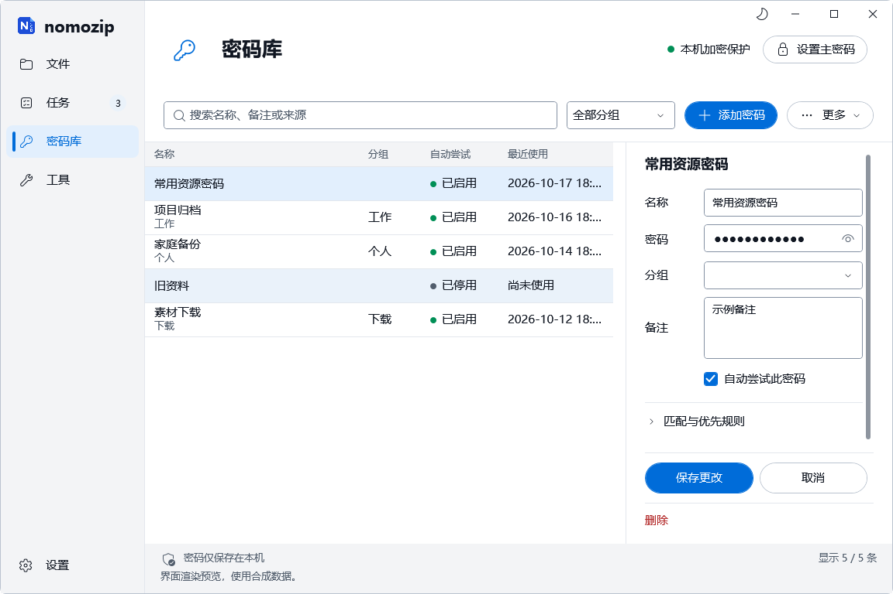
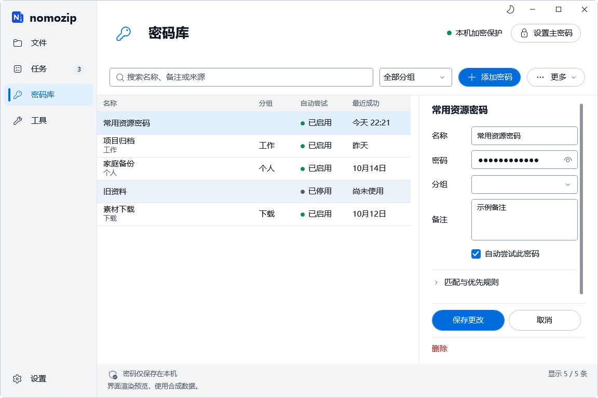
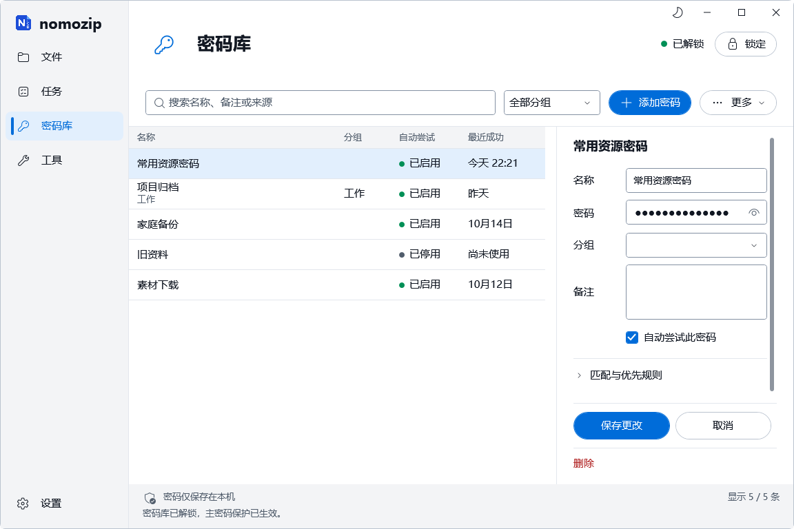
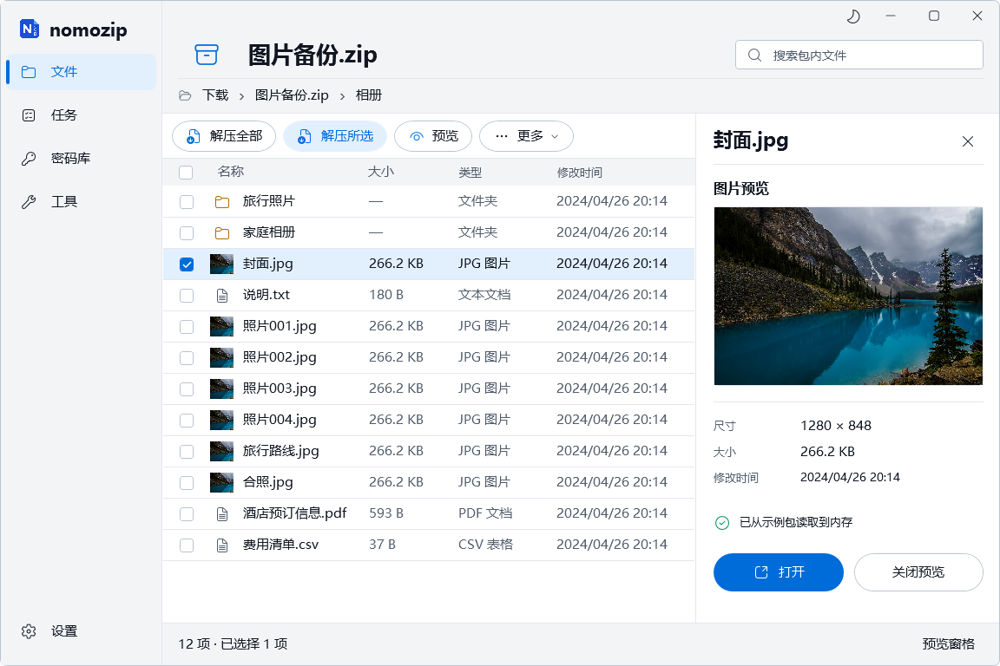

nomozip · 参考图复现版
ARM64 原生候选 · 7e76439 · 待用户验收
沿用当前x64界面与业务源码ddb0e07。原生Windows ARM64 CI中英文各447项通过，186次字体审计/语言无偏差；另33项原生架构检查、17项跨架构合成密码库检查通过。主程序、CLI、工作进程、26.03/26.04引擎均为ARM64 PE（AA64），共享.NET 10桌面运行库。
ARM64轻量体验包 · ARM64独立配置启动入口 · 原图来源、检查与包摘要。启动入口使用同目录candidate-profile-arm64，需ARM64 .NET 10 Windows桌面运行库；代理未在本机启动或安装。
两语言共六张归档核心图（浅色、深色、窄窗）与x64原图字节完全一致。密码库截图的时间来自各自runner本地时钟，实际布局/状态/时间文字已核对。下方产品和密码库状态选择均可切换x64/ARM64；未修改已确认设计。
384张原始PNG、2个36帧×80ms GIF、18个原JSON已保存。实际x64进程在ARM64 Windows内创建合成DPAPI/主密码库，ARM64读取编辑，再由x64读取；没有使用真实密码库。物理DPI、多屏与完整安装/注册表历史套件本轮未重跑；当前候选等待用户最终验收。
本次补充 · 密码库状态与最近成功时间
主密码保护生效后显示“已解锁 + 锁定”；锁定后清空密码列表与明文控件，显示“已锁定 + 解锁”。未设主密码保持真实的“本机加密保护 + 设置主密码”。全部使用原有真实保护流程。
“最近成功”按本机时区显示今天时间、昨天、月日或跨年日期，未使用显示“尚未使用”；悬停保留完整本地日期时间与时区偏移。仅成功解压或创建压缩包更新记录。按钮20 DIP统一Fluent图标，时间列124 DIP，密码库操作提示进入原底部状态区，避免与窄窗菜单重叠。
启动新的x64独立配置候选 · 统一参数与本次验收记录 · 保留前一候选原始证据
前一候选 · 同尺寸与示例列表，完整日期被裁切
新版 · 相同示例列表，最近成功清晰显示
两轮使用同一页面/画布与列表生成规则，各轮时间取各自CI时刻。下方另用独立合成库实际设置主密码，展示真实解锁、锁定状态；画面由软件运行生成，未改图。
已解锁 · 浅色1152×768 · 简体中文
最新x64 CI中英文各447项通过，186次字体审计/语言无偏差。本次增加22项针对性密码库检查；物理DPI、多屏和实际系统高对比切换仍待体验。x64候选待用户最终验收，ARM64未开始。
x64 实际产品 · ddb0e07 · 待用户最终验收
当前核对实际产品候选，采用稿与参数保留为基准。最新隔离检查、原图来源和包摘要见 来源记录 与 统一规范及阶段记录。当前 x64 CI。
本地 x64 轻量体验包（需要共享 .NET 10 桌面运行库，代理未在本机启动）。独立配置启动入口使用候选目录内的 candidate-profile。中英文各447项检查通过；186次字体审计/语言无偏差，384张原始PNG、2个36帧GIF已归档。工程核对已完成，现暂停等待用户最终验收。
采用基准 · 1152×768 · 同一 ZIP / 封面 / 复选状态
实际产品 · 相同画布；显示集合仅在 CI 按基准顺序排列
采用稿 / 实际产品叠加
两张均为1152×768原始WPF截图，图像字节未修改。CI仅重排合成夹具的显示集合以对齐原图行次，不修改软件默认排序。原图全部 JPG 预载缩略图；产品仅解码明确请求的图片。实际任务计数、状态栏和列表/网格入口保留。上述差异不按像素误差判定失败。
其他核心界面与状态
文件浏览：同采用稿状态
实际任务控件动画
36帧GIF来自实际产品任务控件与ArchiveTaskRow绑定的受控夹具；圆环、条、百分比共用显示值。暂停/继续/完成/减少动态效果分别检查，不将其声称为引擎吞吐或全队列暂停集成录像。
| 核对项 | 结论 / 差异 |
|---|
| 核心布局/字体/颜色 | 1152×768及800×600，同一品牌、130标题区、186导航、350/300预览、36行和紧凑表头。字体角色参数映射为共享样式并审计。 |
| 真实业务 | 现有新建、库、校验、队列、更新、编辑/写回、冲突与图片打开命令保留；实际内容及系统关联行为不复制原型占位。 |
| 扩展布局 | 真实页面保留较多参数/状态和队列并发入口，详情/弹窗高度按内容调整；窄窗可滚动，固定操作保持可达。完整对照与差异见MASTER。 |
| 验证边界 | 隔离CI实际软件、合成数据、截图/原生窗口捕获；物理缩放、多屏、高对比实际切换及系统查看器实际显示留待体验。没有替换安装或发布版本。 |
用户已采用此版本（2026-10-17，源码 967175a）。当前实际 WPF 核心截图与 MASTER 参数作为后续设计和实现基准；待选 1、待选 2 继续保留。以下保留核心采用稿；最新产品与扩展状态见上方，最终软件验收由用户决定。
左侧是原概念图，右侧是实际运行 WPF 客户区的原始渲染截图。1152×768 DIP 以 4/3 倍离屏像素密度输出为 1536×1024，画布比例一致；不代表物理 DPI 已验收。原图与实际图均未修饰或拼接。
目标 · 原设计图 02 实现 · WPF 实际窗口客户区
实现 · WPF 实际窗口客户区
同画布叠加检查
0% 为原图，100% 为实现。对比区域边界、表头、行距和预览面板；照片、图标、真实统计及文字不同会形成重影，不能以全图像素误差评判还原度。
本轮反馈修正
已逐张检查 14 组概念图（含第 13 组新旧版，共 15 张）。解压操作换为文件提取图标；表头使用紧凑矩形悬停与内部焦点；执行进度进入独立任务页，圆环、条和数字同步。以下局部放大仅改变原始截图的显示位置与比例，点击可查看完整截图。
名称 · 实际鼠标悬停名称 · 实际按下大小 · 已排序，Tab 聚焦系统对比色 · 聚焦
任务区域与参考图
目标 · 图 05 的任务页 实现 · 一个实际示例任务
实现 · 一个实际示例任务
正在解压 暂停 · 所有进度保持
暂停 · 所有进度保持 完成 · 100% 与禁用操作
完成 · 100% 与禁用操作 800×600 任务区域
800×600 任务区域
修正后的排序箭头
更多使用统一矢量下拉；名称/大小只有当前排序列显示方向箭头。以下为大小升序的实际窗口：

解压进度动画
真实读取生成 ZIP 的字节，刻意放慢，仅写入内存。220ms 缓动可关闭，圆环/条/百分比共用显示值；无浮层淡入，遵从系统减少动态效果；不是正式解压引擎速度。GIF 默认不自动播放。
其他检查画面
深色主题 800×600 最小窗口
800×600 最小窗口 搜索空结果
搜索空结果 正在解压
正在解压
x64 隔离 CI：37/37 项通过 · 源码 967175a · 16 张实际 PNG + 220 帧 GIF · 等待用户确认方向
差异与验收边界
| 项目 | 实现取舍 |
|---|
| 布局与组件 | 以相同比例复现左导航、双层顶部、胶囊操作、细线表格、右侧图片预览。以原始图与实际图并排/叠加检查，结果由用户判断。 |
| 字体与图标 | Microsoft YaHei UI 与统一 Fluent Regular 20；品牌保留原 nomozip 图标。避免继承概念图中模糊的字形和混合图标。 |
| 内容 | 换用 Brett Hamm 的授权照片和实际生成 ZIP。照片尺寸、大小及 12 项计数来自内容；不复制原图中的虚构数据。 |
| 尚未验收 | 完整产品页面、真实引擎、英文、长路径、多任务、物理 DPI、高对比系统切换与最终美观度。当前只做 x64 代表性核心稿。 |
设计参数与阶段范围 · CI 原始检查记录 · 照片：Brett Hamm / CC BY-SA 4.0